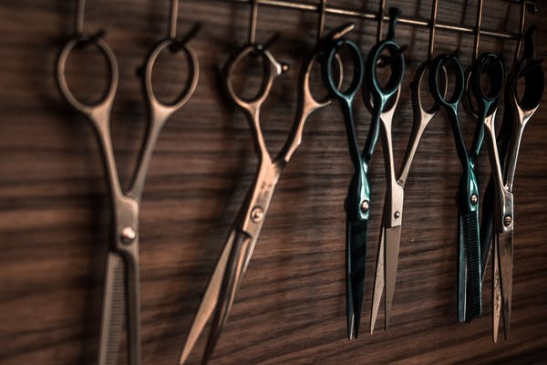
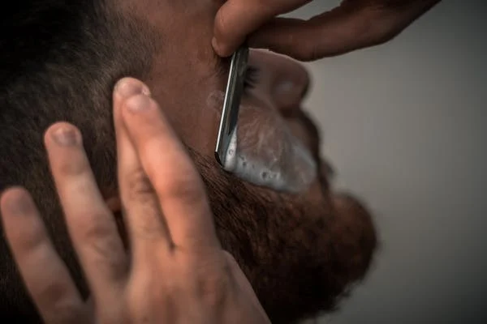
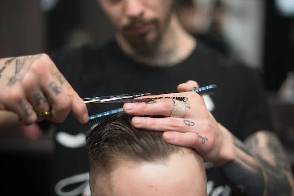
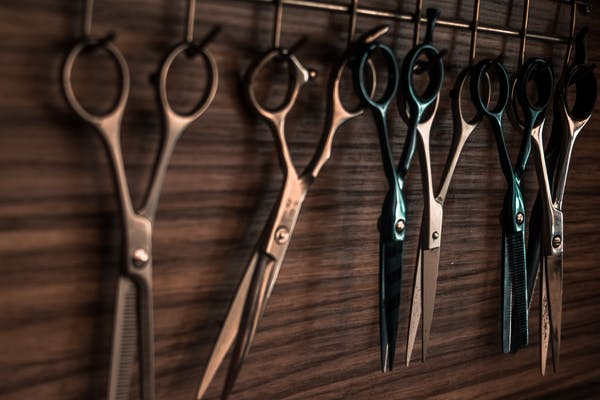
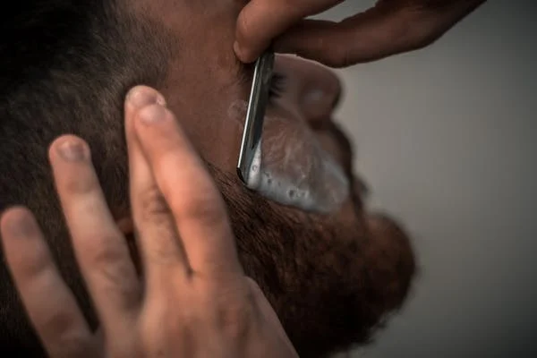
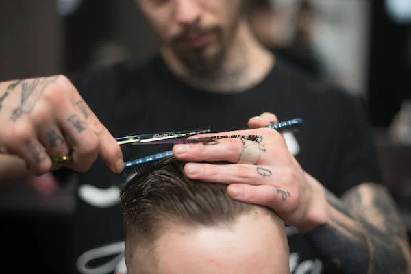

Oliveira Barbearia é uma barbearia fictícia criada para simular o desenvolvimento
de uma página web realista e condizente com as necessidades do ramo. A barbearia
oferece serviços para atender aos mais sofisticados cortes de cabelos, além de contar
com ótimos profissionais, dispor de um ambiente aconchegante e confortável onde você
pode aguardar pelo seu corte.
A Barbearia Oliveira surgiu coom o intuito de oferecer os melhores cortes da região e
satisfazer nossos clientes deixando-os sempre no melhor estilo para impressionar.
Contamos com um ambiente aconchegante onde você pode acompanhar seus jogos favoritos
na Champions League, se divertir na mesa de bilhar tudo isso enquanto aguardar seu corte.
 




